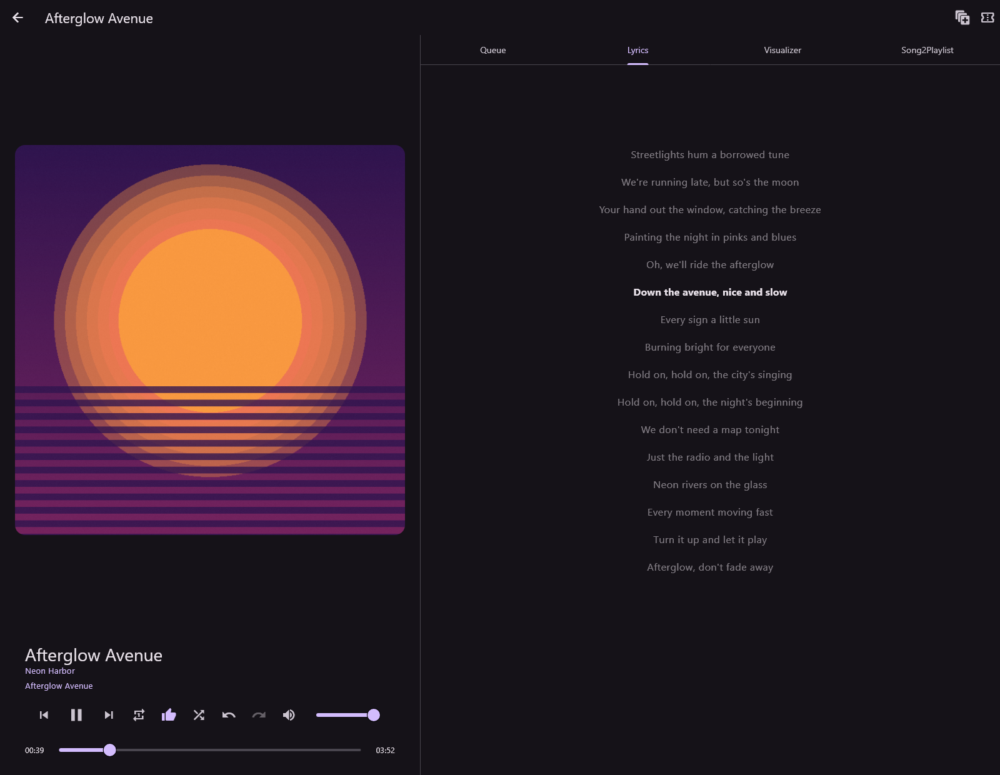
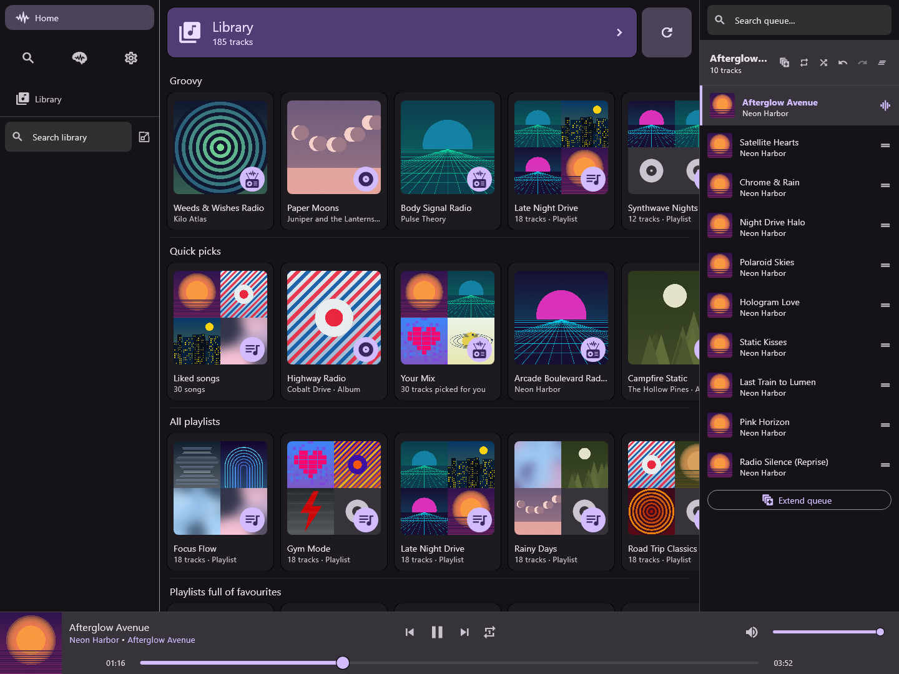
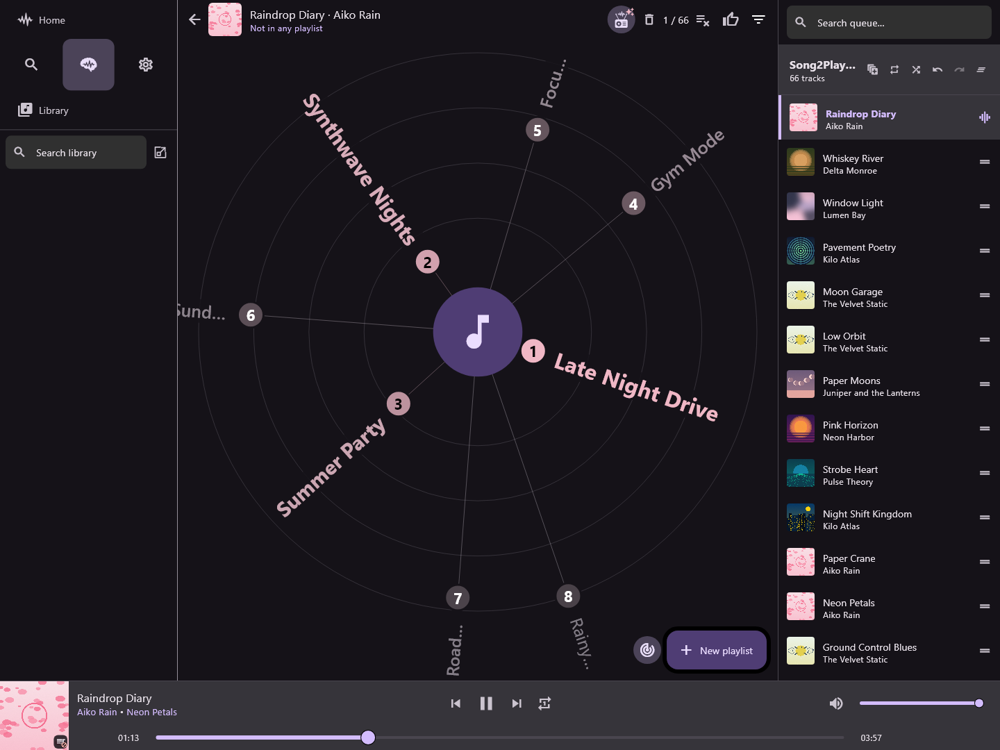
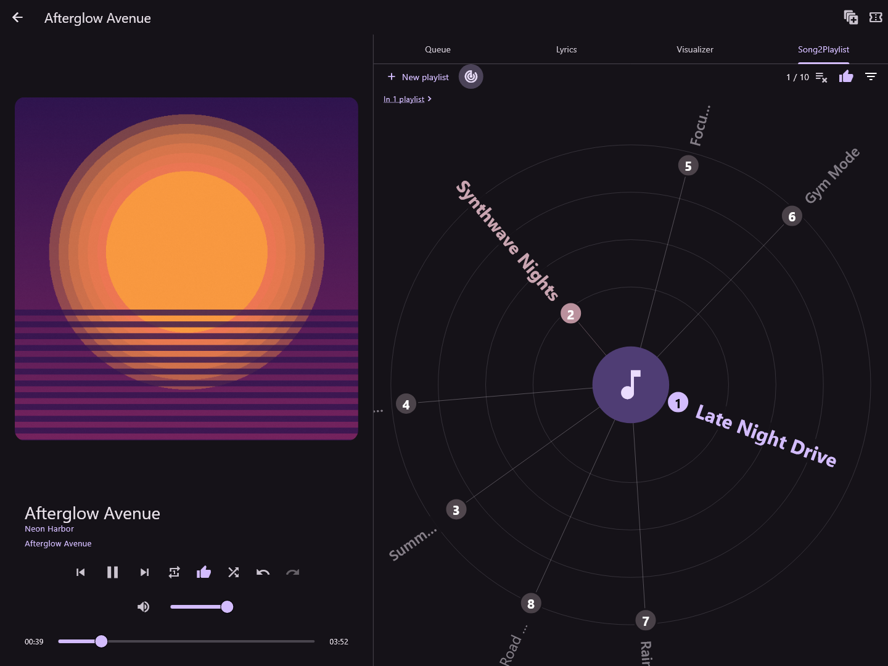
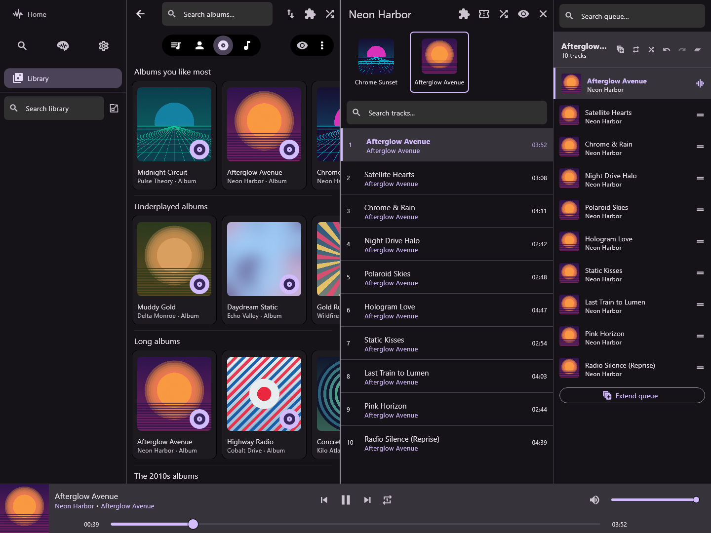
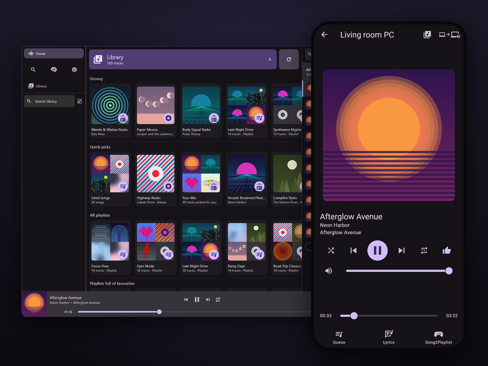
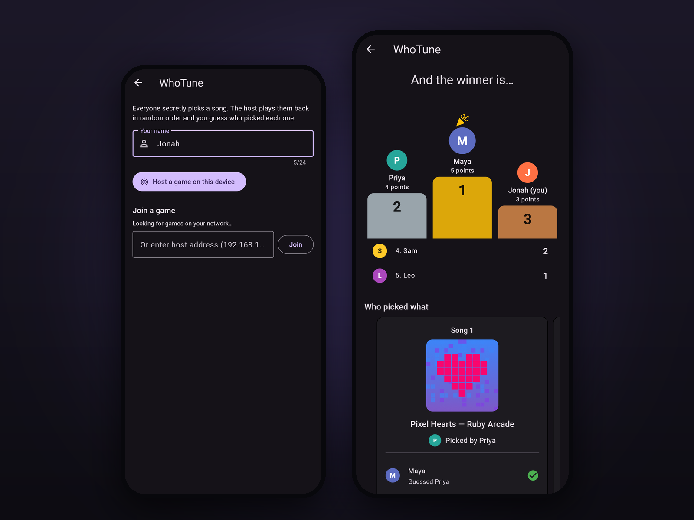
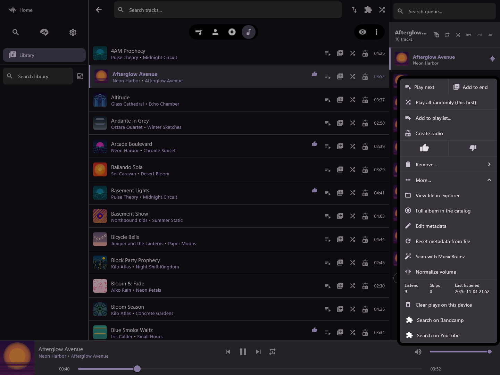
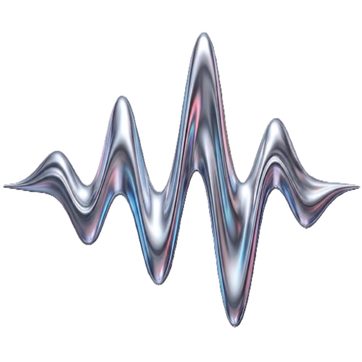

The smart music player that accesses a whole world of music, without ever touching the cloud. Discover new music and rediscover old favorites, TuneZinc lets you explore your library in a new way, without a subscription or a cloud account.
No account, no subscription, no ads. Recommendations are worked out on your device, offline.

TuneZinc gives the music you own the smart extras people expect from streaming apps. It just runs entirely on hardware you own.
No subscription, no account, no ads. Point TuneZinc at your music folder and it builds your library, keeps it up to date, and helps keep it tidy.
Your files stay yours: nothing is written to them unless you ask, and every write is made to a copy, checked, then swapped in.
Type "happy 90s" and get a radio from your own songs. Home, radios and playlist suggestions are all worked out on your device, offline.
Under the hood: a built-in catalog of about 1.1 million songs that knows which songs sound alike, plus each song's moods, genres, decade and language.
Phone, laptop and desktop share one library, playlists and play history over your home Wi-Fi. Use your phone as a remote for the computer on your speakers.
Under the hood: devices talk directly, pair once with a six-digit code, and every connection is encrypted.
Start a round of WhoTune, the built-in party game: everyone secretly picks a song, and everyone guesses who chose each one.
Friends join from TuneZinc on their own phones over the same Wi-Fi, with a six-digit code.
Home is a set of rows you scroll sideways, like a streaming app: the albums, artists and playlists you play most, plus rows for moods, genres and decades, each with song radios. Pull to refresh and Home deals a new mix.

Libraries fill up with songs that never make it into a playlist. SmartZinc is a tab of helpers that fix that, and help you rediscover what you already own.

Live albums and DJ mixes flow the way the artist made them. Songs recorded too loud or too quiet can be normalized, and an album keeps one level for all its songs, so its quiet and loud moments stay that way. Nothing is changed in your files.

TuneZinc scans your music folder and notices when files are added, moved or deleted. It looks songs up on MusicBrainz to fix titles, artists, albums and years, fills in missing album art, and spots duplicates you can merge in one step.

Like a song on your phone, make a playlist on your laptop, and both devices show it. Likes, ratings and play history stay the same on every device you link, and a play on one counts on all of them.

Everyone secretly picks a song. The songs play one by one, and everyone guesses who chose each one. Right guesses score points, and the results screen crowns the winner.

Add-ons appear in the right-click menu and can play songs, build playlists, suggest tag changes, search, and react when something happens in the app, such as a new song starting.

Lyrics, song details, album art, tour dates and scrobbling each have their own switch, and all are off until you turn them on. Recommendations are worked out on your device, and device sync stays on your own network, encrypted.

TuneZinc is free on Windows, macOS and Linux, and about $5 on mobile. No ads, no subscription, and it runs entirely on your own devices. The download includes a built-in song catalog of about 331 MB.